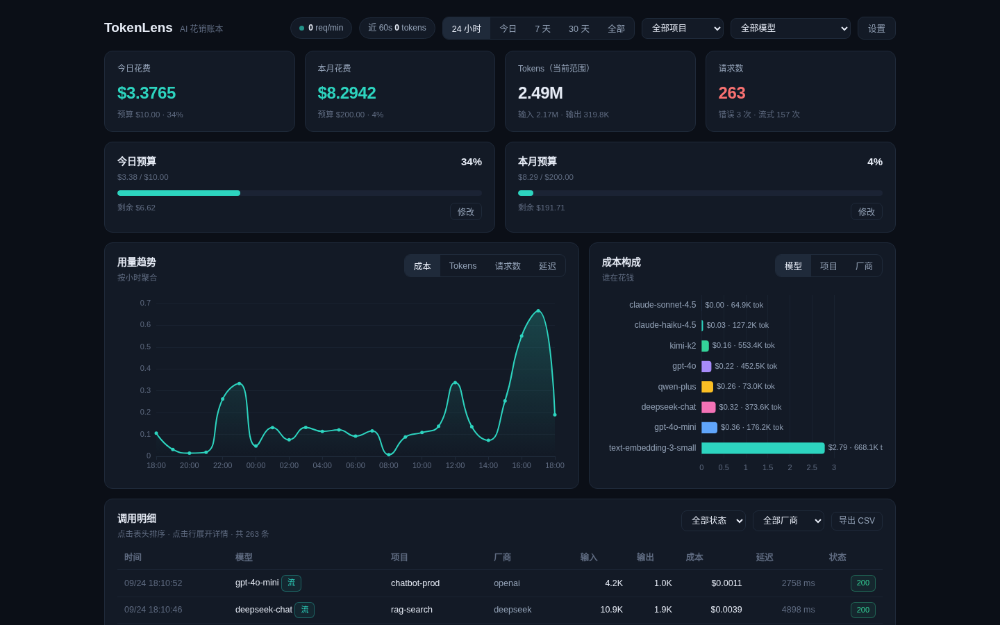
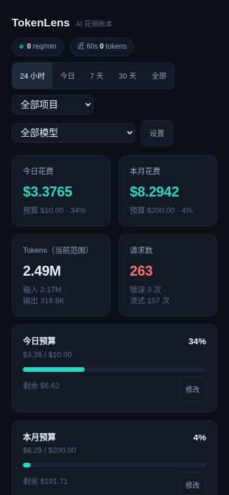
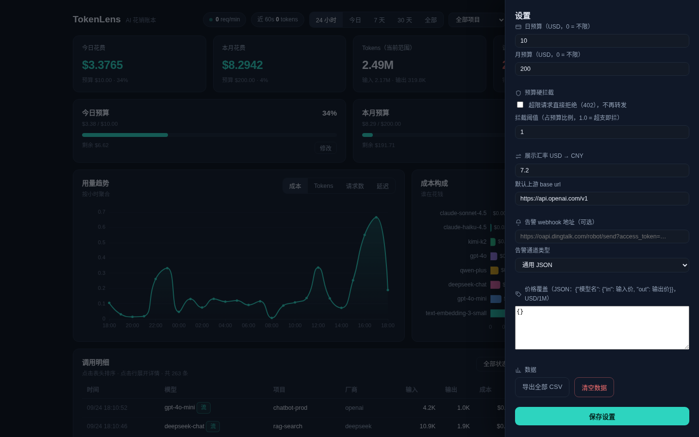
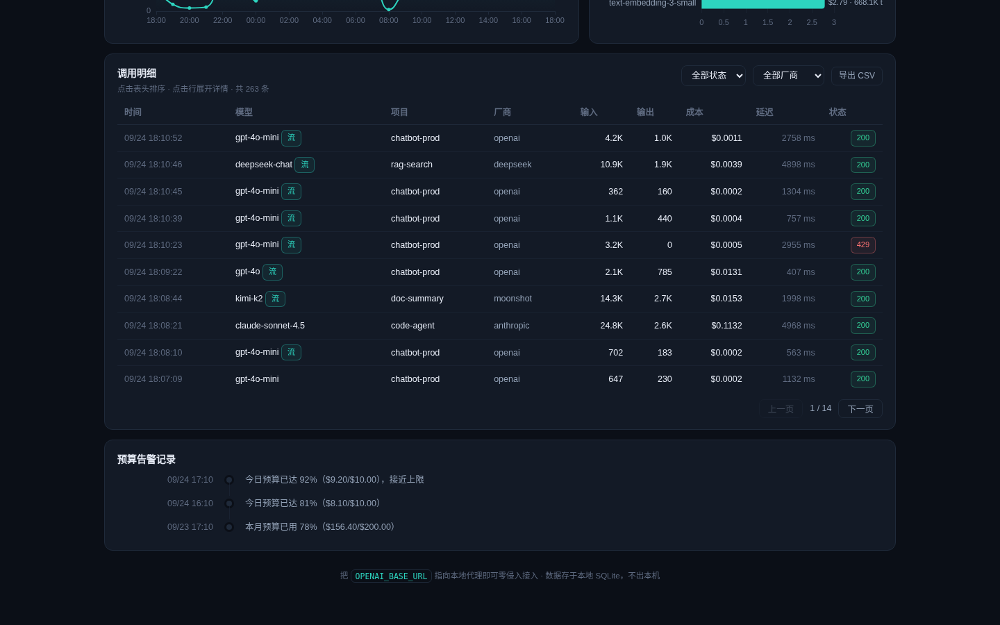

真实界面录制：骨架屏加载、KPI 数字滚动、图表维度切换、明细展开、设置抽屉与告警时间轴。
1440×900 桌面端操作实录 · 完整演示 22s
面向个人与中小团队的轻量本地网关——不重复造轮子，装完即用。
只改一行 base_url 即接入，SSE 流式逐 chunk 转发并解析 usage，支持多厂商路径别名路由。
只记元数据（模型、token、成本、延迟），不记 prompt / 响应内容；API Key 仅存 12 位指纹，单机 SQLite。
钱为主线：今日 / 本月花费、预算进度条、按模型 / 项目 / 厂商的成本构成、可排序明细、导出 CSV。
超限请求直接 402 拒绝、不再转发上游；80% 阈值告警 + 钉钉 / 企业微信 / 飞书 Webhook 推送。
优先用上游 usage 精确值，退化到 tiktoken 再退化为启发式估算；价格表同步自 LiteLLM（2000+ 模型）并内置国内模型兜底。
单进程、零外部服务、纯 Python；离线也能打开仪表盘看内嵌演示数据；34 项单元 + 38 项端到端测试护航。
同一端口按路径别名路由多厂商（/v1/deepseek/…、/v1/dashscope/…、/v1/anthropic/…）；请求头 X-TokenLens-Project 打业务标签。Authorization 原样转发、绝不落库。
深色「花销账本」仪表盘，桌面与移动端自适应。




pip install .
python -m tokenlens start
export OPENAI_BASE_URL=
http://127.0.0.1:8787/v1
http://127.0.0.1:8787